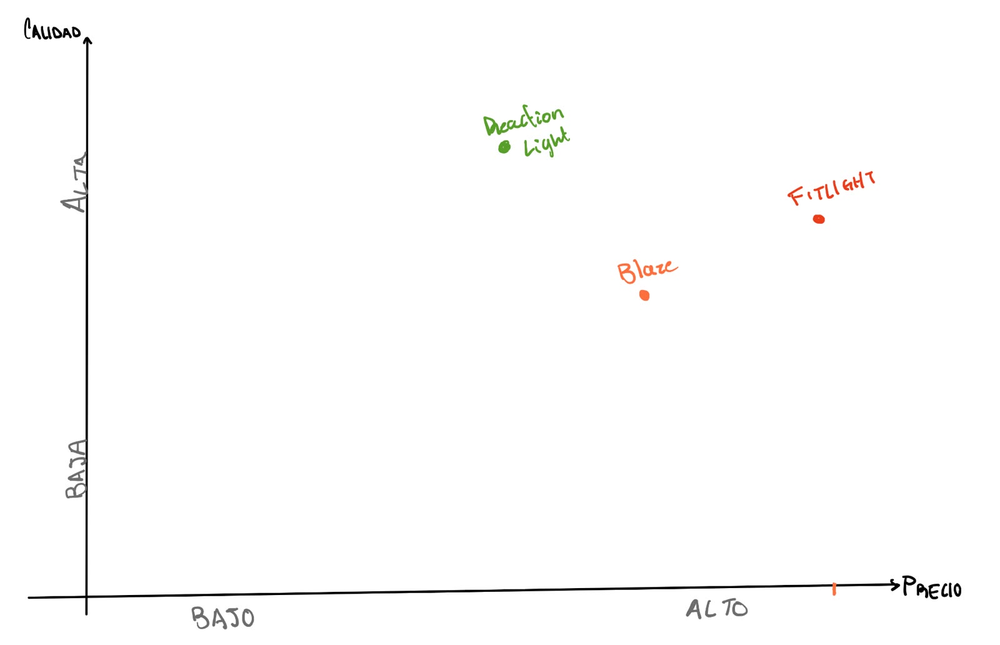

SEMANA 4: Mercado, valor y propuesta de valor
Conclusión de entrevistas
Revisión y Ajuste de Hipótesis
Hipótesis Originales
⦿ H1 (Modelo de negocio): Los dueños de estudios HIIT/funcional pagarían $1,500-2,000 MXN/mes por el software (adquiriendo los pods a costo), porque automatiza la dirección del circuito y aumenta retención. Si es falso: el SaaS muere y quedan atrapados en guerra de precios de hardware.
⦿ H2 (Experiencia de usuario): Los clientes de clases grupales prefieren guiarse por LEDs y rankear tiempos de reacción, porque la gamificación distrae mejor del agotamiento que un circuito tradicional. Si es falso: las luces no añaden valor sobre un cronómetro de pared.
⦿ H3 (Viabilidad técnica): La arquitectura ESP32 + tap sensors + acelerómetro resiste cientos de impactos diarios en pared, piso y costal sin fallar ni perder conexión durante un mes de uso comercial. Si es falso: el formato portátil es inviable y toca volver a una estación fija cableada.
Hipótesis Reformuladas
⦿ H1 reformulada: "Creemos que un dueño de estudio HIIT/funcional paga hoy por alguna herramienta o proceso para dirigir sus circuitos (instructor extra, cronómetro, app), y que reconoce un problema operativo lo bastante caro como para aceptar una suscripción institucional de $X MXN/mes por encima de lo que pagaría un usuario individual por una app de entrenamiento.
Si es falso: no hay diferencial de valor entre 'para el estudio' y 'para mí', y el precio tiene que anclarse al rango de apps de consumo (60-150 MXN), obligando a un modelo B2C de bajo ticket en vez de B2B."
⦿ H2 reformulada: "Creemos que agregar estímulo visual y ranking a un ejercicio de reacción aumenta la motivación y el número de repeticiones/toques frente a hacer el mismo ejercicio sin retroalimentación visual — sin importar si es en grupo, en casa o en una sesión individual con entrenador.
Si es falso: la gamificación no cambia el comportamiento medible y el valor del producto se reduce a ser un cronómetro con luces."
⦿ H3: Se mantiene igual.
Hipótesis Nueva: Precio de suscripción individual vs. institucional
"Creemos que, si el producto se vende como suscripción individual (no institucional), el precio que un usuario de gimnasio aceptará pagar está en el rango de $79-149 MXN/mes — el mismo rango que pagan hoy por Spotify, apps de streaming de entrenamiento (tipo Peloton Digital, Adidas Training) o wearables con app premium — y que un gimnasio estaría dispuesto a subsidiar o revender esa suscripción si el precio por usuario no supera ese techo, o pagar una suscripción con un precio más elevado pero que sea el gimnasio el que ofrece el servicio.
Si es falso: los usuarios de gimnasio no valoran una app de reacción al mismo nivel que una app de streaming o fitness general, y el precio de equilibrio real es menor (freemium con upsell de hardware) o mayor solo si se reposiciona como herramienta profesional para el entrenador, no para el alumno."
Síntesis de Validación (Preguntas y Respuestas)
⦿ 1. ¿Qué hipótesis pusieron a prueba?
H1 (¿el dueño de estudio pagaría una suscripción SaaS de $1,500-2,000 MXN/mes?), H2 (¿los LEDs y el ranking mejoran la experiencia en clases grupales?) y H3 (¿el hardware resiste el uso comercial diario?), a través de 4 entrevistas de validación.
⦿ 2. ¿Qué encontraron — confirmó, ajustó o pivotó?
H1 se ajustó/pivota: el único dato de precio disponible (60-100 MXN, tipo apps de consumo) contradice el ticket de $1,500-2,000, y ninguna entrevista fue con el comprador real (dueño de estudio HIIT).
H2 se ajustó parcialmente: hay interés genuino en la gamificación, pero ninguna evidencia específica de "clases grupales" — el interés apareció más en uso individual/en casa.
H3 no se probó: ninguna entrevista pudo evaluar durabilidad.
⦿ 3. La cita textual más importante de sus usuarios
"Es gratis. Todo es gratis, no hay como poner una parte económica." — el administrador del gimnasio, respondiendo sobre el costo de no tener una buena solución de medición de reflejos.
⦿ 4. Qué cambió en el concepto (o por qué se mantuvo igual)
El concepto se ajusta: de "medir tiempo de reacción" como propuesta de valor central a "hacer más divertido y motivante un circuito", con la medición como parte del juego, no como la promesa principal. El modelo de negocio se reposiciona de SaaS institucional de alto ticket hacia posible venta de hardware o suscripción individual de bajo ticket, mientras no se valide con el comprador correcto. La interacción tecnológica (estímulo + toque + ranking) se mantiene sin cambios, porque sigue teniendo resonancia en todas las entrevistas.
Oportunidad de mercado
PERFIL DE SEGMENTO ACCIONABLE
CAPA 1 — DEMOGRÁFICA
¿Quién es con suficiente detalle para encontrarlo?
⦿ HIPÓTESIS: Estudio boutique, gimnasio HIIT, box de CrossFit o centro de entrenamiento funcional ubicado en México. Es el segmento definido por el equipo, pero ninguna entrevista confirmó que sea el comprador prioritario.
⦿ HIPÓTESIS: Negocio que ofrece clases grupales de alta intensidad, cardio-boxeo, artes marciales, agilidad o circuitos. Las entrevistas mencionaron boxeo, artes marciales y agilidad como posibles aplicaciones, pero no validaron esta combinación como un nicho comercial homogéneo.
⦿ VERIFICADO: Establecimiento privado de acondicionamiento físico identificable por ubicación, actividad y tamaño en el DENUE. Funciona como criterio de localización, no como evidencia de necesidad. El DENUE permite filtrar establecimientos, reportando más de 6 millones de unidades económicas en total.
⦿ HIPÓTESIS: Negocio ubicado en una ciudad grande o zona con concentración de estudios premium. La evidencia secundaria muestra oferta boutique y precios premium en CDMX, Monterrey, GDL y Mérida, pero no demuestra que esas plazas sean las mejores para este producto.
⦿ HIPÓTESIS: Operación con suficiente volumen de clases o alumnos para beneficiarse de rankings. No se conoce todavía el número mínimo de alumnos, clases o entrenadores que hace económicamente atractivo el producto.
Hueco principal: Aún no está identificado el rol comprador con suficiente precisión: propietario, administrador, head coach, entrenador o alumno.
CAPA 2 — CONDUCTUAL
¿Qué hace hoy para resolver el problema?
⦿ VERIFICADO: El entrenador entrevistado utiliza un semáforo y silbatos para trabajar estímulos y reacción.
⦿ VERIFICADO: El atleta de boxeo recibe el entrenamiento y la medición como parte de la mensualidad de su coach; no paga por separado.
⦿ VERIFICADO: El atleta de atletismo usa un reloj Garmin que le da datos de desempeño, pero suele olvidar revisarlos y debe pedírselos al entrenador.
⦿ VERIFICADO: El administrador conoce pruebas gratuitas de velocidad de reacción y mencionó una máquina de estímulos sonoros para taekwondo.
⦿ VERIFICADO: El administrador identificó un dispositivo similar de Kigo con ranking y escaneo de código en Plaza Solesta (requiere verificación directa posterior).
⦿ VERIFICADO: El problema observable es la fricción para convertir mediciones existentes en entrenamiento frecuente, seguimiento y motivación; no la ausencia de instrumentos de medición.
⦿ HIPÓTESIS: El segmento objetivo ya utiliza wearables, pantallas, leaderboards o software de desempeño. (Solo se confirmó un Garmin en un atleta, no una práctica generalizada B2B).
⦿ HIPÓTESIS: El negocio realiza mediciones con frecuencia suficiente para justificar un dispositivo dedicado.
⦿ HIPÓTESIS: La solución actual incluye reportar resultados a alumnos, crear rankings o administrar retos dentro de clase.
⦿ HIPÓTESIS: El estudio tiene un problema de retención que intenta resolver mediante gamificación y datos.
CAPA 3 — PSICOGRÁFICA
¿Qué le preocupa y qué lo movería a cambiar?
⦿ VERIFICADO: “Lo que verdaderamente generará el cambio será el entrenamiento diario”, no el aparato en sí (Cita del entrenador).
⦿ VERIFICADO: “¿Cómo lo hago divertido? ¿Cómo lo hago desde una app?” El administrador regresó a la motivación y experiencia, no a la precisión.
⦿ VERIFICADO: La motivación y el enganche parecen tener más peso que aumentar la precisión del dato (patrón preliminar).
⦿ HIPÓTESIS: El segmento podría valorar una experiencia que convierta una medición en práctica diaria, reto o ranking.
⦿ HIPÓTESIS: El comprador cambiaría si el sistema reduce el trabajo del entrenador, facilita la consulta de resultados y aumenta la asistencia.
⦿ HIPÓTESIS: La exactitud técnica por sí sola no sería una razón suficiente para comprar.
⦿ EMERGENTE (Hipótesis comercial): La inclusión de personas ciegas o con discapacidad visual podría ser una línea de valor relevante (planteado espontáneamente por el administrador).
Hueco principal: No existe evidencia suficiente sobre actitudes, criterios de confianza, percepción de IA, privacidad de datos o disposición a sustituir procesos actuales. No conviene afirmar que este segmento es “innovador” o “premium” sin observar conductas concretas.
CAPA 4 — ECONÓMICA
¿Cuánto le cuesta el problema, cuánto podría pagar y quién decide?
⦿ VERIFICADO: Los entrevistados no pagan hoy específicamente por medir el tiempo de reacción.
⦿ VERIFICADO: El atleta de boxeo tiene la medición incluida en la mensualidad del coach.
⦿ VERIFICADO: El uso del Garmin y herramientas gratuitas reduce el costo monetario directo del problema.
⦿ VERIFICADO: El costo actual parece estar más relacionado con tiempo, olvido y seguimiento manual que con la compra de medición.
⦿ VERIFICADO: El único ancla de precio mencionada fue de 60–100 MXN mensuales (percepción de gasto personal B2C, no empresarial).
⦿ VERIFICADO: Una clase boutique puede costar aprox. 250–300 MXN (referencia secundaria, no presupuesto disponible).
⦿ HIPÓTESIS: El estudio objetivo tiene presupuesto para comprar el dispositivo o pagar la app.
⦿ HIPÓTESIS: El precio viable está entre 60–100 MXN mensuales por usuario (no transferible a un esquema B2B/HaaS).
⦿ HIPÓTESIS: El propietario/administrador decide la compra y el entrenador influye en ella.
⦿ HIPÓTESIS: El alumno pagaría una suscripción individual o el negocio pagaría por sede/dispositivo.
Hueco crítico: No se conoce el costo económico de la fricción ni el valor de resolverla (horas del entrenador, alumnos afectados, retención, ingresos por clase, disposición de pago B2B).
Nivel de Conocimiento del Segmento
| Estado de Validación | Capas y Observaciones |
|---|---|
| Mayoría VERIFICADA | Capa 2 (Conductual) y Capa 3 (Psicográfica), pero únicamente respecto a las cuatro personas entrevistadas. La motivación, diversión y uso de herramientas gratuitas actuales son hechos documentados. Algunos datos de la Capa 4 (ausencia de pago específico y ancla de 60-100 MXN). |
| Mayoría de HIPÓTESIS | Capa 1 (Demográfica): No está validado que estudios boutique/HIIT sean el comprador con mayor dolor. Capa 4 (Económica): No hay disposición de pago empresarial ni retorno cuantificado. Capa 2: Faltan frecuencias y operativas reales del negocio B2B. |
Agenda de Investigación Prioritaria
| Entrevistar | Propietarios y administradores de al menos tres subsegmentos por separado: box/CrossFit, boxeo-artes marciales y estudios HIIT/funcional. |
| Observar | Una clase completa y medir el proceso actual: preparación, aplicación de estímulos, captura de resultados, comunicación al alumno y tiempo invertido. |
| Métricas B2B | Preguntar por métricas concretas: asistencia, cancelaciones, retención, número de alumnos, clases por semana y gasto mensual en tecnología. |
| Validar Pago | Probar una demostración funcional (no conceptual) y solicitar una acción verificable: piloto pagado, depósito, carta de intención o introducción con quien decide. |
| Modelos | Comparar tres esquemas de precio: cobro por dispositivo, suscripción por sede y suscripción por alumno. |
| Inclusión | Investigar por separado la oportunidad con personas con discapacidad visual y organizaciones especializadas (no mezclarla con el segmento fitness). |
Hipótesis Críticas Sin Verificar
| Hipótesis Crítica | Estado / Riesgo Principal |
|---|---|
| El comprador prioritario son negocios fitness grupales | Las entrevistas no convergieron en HIIT/funcional; ninguna persona lo mencionó espontáneamente. |
| La gamificación genera valor económico B2B | Se validó interés verbal en hacer el entrenamiento "divertido", pero no que esto aumente retención, ingresos o disposición de pago por parte del estudio. |
| Diferenciación clara de soluciones actuales | Ya existen Kigo, máquinas sonoras y apps gratuitas; "medir con luces" no es todavía una razón de compra única validada. |
| Modelo de precio sostenible | El ancla de 60–100 MXN es B2C. No se ha probado si soporta hardware, IA, soporte, instalación y margen. |
Perfil en una Oración & Conclusión Operativa
Perfil Provisional: Negocio mexicano de entrenamiento grupal que actualmente puede resolver la medición con herramientas gratuitas, coach, silbatos, semáforos o wearables, pero podría pagar por una solución que convierta esos datos en entrenamiento diario, motivación y seguimiento dentro de una app; sin embargo, todavía no está verificado que los estudios boutique, HIIT, CrossFit o funcional sean el segmento comprador ni que exista disposición de pago empresarial.
Conclusión Operativa: El segmento hipótesis no está validado como segmento de compra. Lo que sí aparece validado es un problema transversal de adopción y seguimiento, no de medición: hacer que el entrenamiento ocurra con mayor frecuencia, sea más atractivo y requiera menos trabajo manual. El siguiente experimento debería vender un piloto de engagement y seguimiento —no un sensor de mayor precisión— a un responsable de negocio claramente identificado.
Piramide de Bain
Pirámide de Valor de Bain — Ecosistema Portátil de Gamificación para HIIT
1. Contexto del Segmento (Resumen Crítico)
El segmento planteado (estudios boutique, HIIT, CrossFit, funcional) no está validado: de las 4 entrevistas realizadas, ninguna fue con un dueño/administrador de este tipo de negocio. La evidencia disponible apunta a un problema más amplio de adopción y seguimiento del entrenamiento, no a una carencia de instrumentos de medición.
2. Análisis del Valor por Nivel
| Nivel | Valor | Beneficiario | Evidencia | Cómo lo genera | Qué falta validar |
|---|---|---|---|---|---|
| Impacto social | Fomento de hábitos de entrenamiento más frecuentes | Usuario final | 🟡 HIPÓTESIS | Al convertir la medición en algo motivador, incentivaría entrenar con más regularidad. | Que el uso del producto realmente aumente la frecuencia de entrenamiento, no solo la percepción de motivación. |
| Impacto social | Mayor accesibilidad al entrenamiento estructurado | Usuario final | 🔴 NO VALIDADO | No hay evidencia directa en las entrevistas sobre accesibilidad. | Ninguna entrevista abordó barreras de acceso; requeriría investigación específica. |
| Transformador | Automatización de estímulos (sustituye semáforo/silbatos) | Entrenador | 🟢 VERIFICADO (método actual) / 🟡 HIPÓTESIS (mejora) | El entrenador ya usa semáforo y silbatos manualmente; el producto automatizaría ese estímulo. | Que el entrenador perciba una mejora real (tiempo, consistencia) frente a su método actual. |
| Transformador | Conversión de mediciones en entrenamiento recurrente | Negocio / Usuario | 🟡 HIPÓTESIS | Es la interpretación central de las entrevistas: el problema no es medir, es sostener el hábito. | Que el producto efectivamente convierta mediciones puntuales en uso recurrente (no solo lo prometa). |
| Transformador | Reducción de trabajo manual del entrenador / atención a más alumnos | Negocio / Entrenador | 🔴 NO VALIDADO | No hay evidencia de que el entrenador quiera o necesite delegar esta tarea. | Ninguna entrevista mencionó carga de trabajo como problema. |
| Emocional | Motivación para entrenar | Usuario final | 🟢 VERIFICADO | La motivación y la diversión aparecieron como temas relevantes en las entrevistas. | Que el producto específico (no solo la idea general) genere motivación medible. |
| Emocional | Diversión en el entrenamiento | Usuario final | 🟢 VERIFICADO | Los entrevistados expresaron interés en que el entrenamiento sea divertido. | Que la gamificación del producto sea percibida como divertida, no como gimmick. |
| Emocional | Sensación de progreso / seguimiento de desempeño | Usuario final | 🟡 HIPÓTESIS | El atleta de atletismo usa Garmin para ver datos, aunque a veces no los revisa. | Que el seguimiento visual del producto se use de forma sostenida, a diferencia del caso Garmin. |
| Funcional | Medición de tiempo de reacción y cadencia | Usuario / Entrenador | 🟢 VERIFICADO | Existen soluciones similares en uso: semáforo, Garmin, pruebas gratuitas, dispositivo Kigo. | Que esta medición sea diferenciable de las alternativas ya conocidas por los entrevistados. |
| Funcional | Visualización de resultados / rankings | Usuario / Negocio | 🟡 HIPÓTESIS | El dispositivo Kigo identificado ya ofrece ranking y escaneo de código (precedente de mercado). | Que los rankings generen valor económico y no solo valor funcional. |
| Funcional | Portabilidad / facilidad de implementación | Negocio | 🟡 HIPÓTESIS | Es un atributo de diseño del producto, sin evidencia directa. | Que la portabilidad sea un factor relevante para quien decide comprar. |
3. Construcción de la Pirámide
Solo se colocan los valores con evidencia (🟢) o hipótesis razonable (🟡); los 🔴 NO VALIDADOS se excluyen explícitamente.
║ IMPACTO SOCIAL ║
║ (solo hipótesis — ║
║ sin evidencia ║
║ sólida todavía) ║
╚══════════════════════╝
╔════════════════════════════╗
║ TRANSFORMADOR ║
║ Convertir medición en ║
║ entrenamiento recurrente ║
║ (🟡 hipótesis central) ║
╚════════════════════════════╝
╔══════════════════════════════════╗
║ EMOCIONAL ║
║ Motivación 🟢 · Diversión 🟢 ║
║ Sensación de progreso 🟡 ║
╚══════════════════════════════════╝
╔══════════════════════════════════════════╗
║ FUNCIONAL ║
║ Medición de reacción/cadencia 🟢 ║
║ Rankings/visualización 🟡 ║
║ Portabilidad 🟡 ║
╚══════════════════════════════════════════╝
Nota: el nivel de impacto social no tiene evidencia suficiente para sostener ningún valor sólido; se deja marcado como vacío por diseño, no relleno artificialmente.
4. Priorización del Valor
Top 3 Funcionales:
⦿ Medición de tiempo de reacción y cadencia: 🟢 VERIFICADO (hay uso real de alternativas: semáforo, Garmin, Kigo).
⦿ Visualización de resultados / rankings: 🟡 HIPÓTESIS (precedente de mercado con Kigo, sin evidencia de pago).
⦿ Portabilidad / facilidad de implementación: 🟡 HIPÓTESIS (atributo de diseño, no validado como criterio de compra).
Top 3 Emocionales:
⦿ Motivación: 🟢 VERIFICADO (mencionado directamente por entrevistados).
⦿ Diversión: 🟢 VERIFICADO (mencionado directamente por entrevistados).
⦿ Sensación de progreso: 🟡 HIPÓTESIS (evidencia mixta: caso Garmin muestra interés parcial, no consistente).
Mayor Potencial Transformador:
⦿ Conversión de mediciones en entrenamiento recurrente: 🟡 HIPÓTESIS (es la lectura más fuerte de las entrevistas, pero no está demostrada con datos de comportamiento).
Posibles Valores de Impacto Social:
⦿ Fomento de hábitos de entrenamiento más frecuentes: 🟡 HIPÓTESIS (derivada indirectamente, no mencionada como tal).
5. Análisis Crítico
A. ¿Dónde está el valor más sólido?
En el nivel emocional, específicamente motivación y diversión: son los únicos valores mencionados de forma directa y repetida por los entrevistados. El nivel funcional tiene evidencia de que el problema (medir reacción) ya se resuelve de varias formas (semáforo, Garmin, pruebas gratuitas, Kigo), lo cual es una señal de que la medición en sí no es escasa. El nivel transformador y social son, por ahora, interpretación.
B. ¿Cuál parece ser el verdadero problema?
Las entrevistas sugieren que el problema no es la falta de medición, sino la cadena medición → entrenamiento frecuente → motivación → seguimiento: el atleta con Garmin tiene datos pero a veces no los revisa; el boxeador recibe medición como parte de un servicio ya existente (el coach), no como algo que compra aparte. Esto apunta a que el reto real es sostener el hábito y el engagement, no instrumentar la medición.
C. Afirmaciones todavía no demostradas:
⦿ Retención: 🔴 No hay evidencia de que los rankings aumenten retención o asistencia.
⦿ Churn: 🔴 No se identificó un problema de abandono relevante en las entrevistas.
⦿ Ahorro de entrenadores: 🔴 No mencionado por ningún entrevistado.
⦿ Escalabilidad: 🔴 Atender a más alumnos sin contratar más staff no está validado.
⦿ ROI y Disposición de pago: 🔴 Sin datos B2B. El rango 60–100 MXN es gasto personal, no precio institucional.
⦿ Segmento comprador: 🟡 Hipótesis sin validar (ningún entrevistado fue dueño/administrador de estudio HIIT).
⦿ Diferenciación: 🔴 Existe al menos un competidor identificado (Kigo) y no se ha probado diferenciación frente a él.
D. ¿Qué propuesta de valor debería probarse primero?
La hipótesis "el negocio no necesita más precisión, necesita convertir la medición en una experiencia de entrenamiento frecuente, motivadora y fácil de seguir" tiene respaldo moderado. Se apoya en los temas de motivación/diversión mencionados y en el patrón de subuso de datos (caso Garmin). Pero sigue siendo una hipótesis: falta evidencia directa de un dueño de gimnasio HIIT que confirme que este es su problema prioritario, y falta evidencia de que resolverlo genere disposición de pago.
E. ¿Qué debería probar el siguiente experimento comercial?
El experimento debería apuntar directamente a cerrar los vacíos de la sección C, con foco en quién compra y cuánto valor económico percibe, no solo en validar la experiencia de usuario. Opciones más fuertes que una entrevista de opinión:
⦿ 1. Un piloto pagado de bajo costo (o depósito reembolsable) con 2-3 estudios HIIT/CrossFit reales, para probar si el dueño/administrador está dispuesto a comprometer dinero.
⦿ 2. Una carta de intención firmada por el decisor de compra, condicionada a resultados del piloto.
⦿ 3. Probar dos modelos de cobro en paralelo (por sede vs. por dispositivo) para detectar cuál reduce más la fricción de decisión.
El objetivo de este experimento no es confirmar que el producto "gusta", sino identificar si existe un comprador real dispuesto a pagar por resolver la cadena medición → hábito → motivación, y a qué precio.
TAM/SAM/SOM
DIMENSIONAMIENTO DE MERCADO: Lumetriq
TAM — Mercado Total Direccionable
Universo de partida: 30,242 establecimientos privados de acondicionamiento físico en México. Es un escenario provisional que debe validarse extrayendo del DENUE los establecimientos de la clase SCIAN 713943. El DENUE 05/2026 reporta 6,138,075 establecimientos totales y permite filtrarlos por actividad, ubicación y tamaño.
| Filtro Aplicado | Establecimientos Resultantes | Fuente / Justificación |
|---|---|---|
| Entrenamiento presencial | 18,145 | Supuesto de primer principio; no existe un porcentaje público específico. |
| Afinidad con HIIT, funcional, CrossFit, combate, atletismo | 8,165 | Supuesto de primer principio. |
| Utilidad del sistema en clases grupales/sesiones | 4,899 | Supuesto de primer principio. |
| Disposición de pago (HW MXN 4,490–7,990 + SW B2B) | 1,715 | Hipótesis de disposición de pago; requiere validación mediante entrevistas, pilotos y preventas. |
Universo final TAM: 1,715 establecimientos compradores potenciales
Supuestos de producto:
⦿ Distribución:70% compra Lumetriq Studio (6 disp. por MXN 7,990) y 30% compra Lumetriq Starter (3 disp. por MXN 4,490).⦿ Precio promedio ponderado de hardware:MXN 6,940.⦿ Suscripción para gimnasio Studio Pro:MXN 899 mensuales o MXN 10,788 anuales.⦿ Ticket promedio del primer año:MXN 17,728 por establecimiento.
Valor anual TAM: MXN 30,407,520 durante el primer año
⦿ Hardware inicial:1,715 × MXN 6,940 = MXN 11,902,100.⦿ Suscripción anual (Recurrente):1,715 × MXN 10,788 = MXN 18,505,420.
SAM — Mercado Alcanzable
Filtros aplicados al TAM:
| Filtro Aplicado | Establecimientos Resultantes |
|---|---|
| Geografía inicial (CDMX, Edomex, GDL, MTY, PUE) | 943 |
| Operación grupal recurrente y capacidad de compra | 472 |
| Accesibilidad comercial (venta directa, redes, coaches, alianzas) | 330 |
| Capacidad de pago (Paquete prom. MXN 6,940 + suscripción) | 198 |
Universo final SAM: 198 establecimientos
Valor anual SAM: MXN 3,510,144 durante el primer año
⦿ Hardware inicial:198 × MXN 6,940 = MXN 1,374,120.⦿ Suscripción anual (Recurrente):198 × MXN 10,788 = MXN 2,136,024.
Nota: El SAM excluye gimnasios públicos, cadenas con procesos corporativos, centros sin clases grupales, usuarios domésticos, atletas individuales y establecimientos que solo aceptarían una app gratuita.
SOM — Mercado Obtenible (Años 1–2)
Meta: 45 gimnasios o estudios pagadores (22.7% del SAM)
Lógica de Go-To-Market:
⦿ Canal específico:Demostraciones presenciales en clases funcionales/HIIT; prospección por IG, WA y alianzas con coaches/distribuidores.⦿ Geografía piloto:CDMX y Edomex (Año 1); GDL y Monterrey (Año 2); Puebla mediante prospección digital.⦿ Capacidad del equipo:2 personas en ventas/demos, 8–10 demos calificadas por vendedor a la semana, conversión objetivo de 5–8%.⦿ Oferta comercial:Lumetriq Studio (6 dispositivos) a MXN 7,990, con acceso de prueba a la app y renovación a MXN 899/mes.⦿ Trayectoria:15 clientes (Año 1) y 30 clientes nuevos (Año 2) para alcanzar los 45 clientes acumulados.
Valor anual SOM: MXN 797,760 de ingresos del primer año para 45 clientes
⦿ Hardware inicial:45 × MXN 6,940 = MXN 312,300.⦿ Suscripción anual (Recurrente):45 × MXN 10,788 = MXN 485,460.
Nota: Si los clientes se adquieren gradualmente, el ingreso real del año 2 sería aprox. MXN 693,660, considerando renovaciones, nuevas suscripciones y hardware de los clientes nuevos.
SEÑAL DE VIABILIDAD
SOM × precio anual = MXN 797,760 de ingresos brutos de primera compra
⦿ ¿Cubre costos operativos básicos de una startup de 4 personas?
Marginal — El precio revisado mejora el modelo, pero 45 clientes todavía probablemente no cubren cuatro salarios, desarrollo de app, inventario, ventas, soporte, garantía y logística.
⦿ Recomendación Estratégica:
Para una operación más sólida, Lumetriq debería alcanzar aprox. 75–100 sedes, aumentar el plan B2B a MXN 1,199–1,499 mensuales, vender paquetes de 12 dispositivos o agregar instalación, capacitación y contenido premium.
⦿ Precios Hipotéticos Recomendados:
| Producto / Servicio | Precio Estimado (MXN) |
|---|---|
| Lumetriq Starter (3 dispositivos) | $4,490 |
| Lumetriq Studio (6 dispositivos) | $7,990 |
| App Individual Pro | $149 / mes (o $1,290 anual) |
| App Gimnasio Studio Pro | $899 / mes (o $8,990 anual) |
| Ticket Promedio 1er Año (Gimnasio) | ~ $17,728 |
FUENTES UTILIZADAS
⦿ INEGI, DENUE 05/2026:Reporta 6,138,075 establecimientos totales y permite analizarlos por actividad, ubicación y tamaño. Define el directorio como fuente para identificar unidades económicas activas.⦿ BlazePod:Starter Kit y Bundles (2024–2026). Referencia de paquetes de dispositivos, accesorios y precios internacionales.⦿ BlazePod / Perform Better:Membresía de la aplicación (2026). Referencia de planes gratuitos y Pro.⦿ FITLIGHT:FITLIGHT System (2025–2026). Referencia de sistema profesional y aplicación sin suscripción.⦿ Banco de México:Tipo de cambio FIX, 24 de septiembre de 2026. Utilizado para convertir referencias internacionales a pesos mexicanos.
Análisis competitivo y Blue Ocean
Parte 1 - Mapa de posicionamiento competitivo
MAPA COMPETITIVO
Segmento: Entrenadores independientes y administradores de instalaciones deportivas/universitarias en México, especialmente combate, atletismo y acondicionamiento físico.
Criterio: “Directo” significa que compite con luces/paneles interactivos controlados por app para entrenar reacción. “Indirecto” resuelve la misma necesidad de mejorar reacción, agilidad o autonomía del circuito mediante otra tecnología. Los precios son referencias públicas internacionales; no necesariamente incluyen importación, IVA, distribución o servicio en México.
DIRECTOS
⦿ BlazePod: Sistema de pods luminosos inalámbricos controlados por app, con estímulos aleatorios, ejercicios configurables, datos en tiempo real y dinámicas competitivas — opera globalmente; disponible para compra internacional — kits desde US$439, con planes de app gratuitos y membresías Pro alrededor de US$12.99/mes.
Debilidad específica: El costo total en México, sumando importación y suscripción Pro, está muy por encima del ancla de software de MX$60–100 mensuales del segmento; además, el entrenador debe administrar la app y colocar varios pods antes de la clase, por lo que no elimina completamente la fricción operativa.
⦿ FITLIGHT: Luces LED inalámbricas que se desactivan por toque o movimiento, con ejercicios programables, seguimiento de resultados y uso individual o grupal — global, con envío directo desde Estados Unidos — sistema desde US$999, con app sin suscripción; cada luz adicional se ofrece alrededor de US$179.
Debilidad específica: Está diseñado y vendido como equipo profesional/elite, lo que lo vuelve financieramente difícil para un gimnasio local o universidad mexicana que prioriza diversión y competencia sobre análisis neurocognitivo avanzado; además, el envío puede generar impuestos y costos de importación, y la garantía anunciada es de un año.
⦿ Lummic: Sistema de cuatro a ocho luces de reacción con estímulos visuales y auditivos, sensores táctiles, juegos y una app gratuita con más de 40 programas — global, principalmente Europa; no se observa una operación local mexicana documentada — kits de cuatro luces desde aproximadamente €241.88, seis desde €349.69 y ocho desde €459; la app es gratuita de forma permanente.
Debilidad específica: Su propuesta es amplia y lúdica, pero la información pública muestra una orientación multisegmento —deporte, niños y adultos mayores— más que una solución enfocada en circuitos de combate o atletismo con flujo de clase, ranking por grupo y configuración rápida para varios atletas.
⦿ ReactionX / VEGVISIR: Pods de reacción con app, sensores de toque, proximidad, vibración y sonido, modos de batalla y medición con precisión anunciada de 0.01 segundos — global; distribución internacional — paquetes publicados desde US$1,600 para cuatro pods, aunque distribuidores comparativos ubican algunos kits de seis unidades aproximadamente entre US$250 y US$370, lo que sugiere una estructura de precios/distribución inconsistente.
Debilidad específica: La inconsistencia entre precios y canales dificulta la compra institucional mexicana y la comparación presupuestaria; tampoco se observa una propuesta localizada para entrenadores mexicanos que necesiten soporte, facturación local, contenido en español y uso sencillo durante clases grupales.
Lectura competitiva: Los tres primeros son los referentes que Lumetriq debe superar en percepción de categoría. BlazePod es el rival más cercano por combinación de hardware, app, aleatoriedad y gamificación; FITLIGHT domina la percepción profesional; Lummic demuestra que existe una alternativa con app gratuita y menor fricción de suscripción.
INDIRECTOS
⦿ Quick Board: Panel físico sensible a presión que proporciona retroalimentación en tiempo real para entrenar reacción, velocidad, coordinación, equilibrio y rehabilitación — global, principalmente Estados Unidos — tablero desde US$2,295–2,495, más licencia de software de US$49.99 a US$199.99 mensuales según número de atletas.
Debilidad específica: Su formato de tablero fijo concentra el entrenamiento en una estación y exige una inversión y suscripción incompatibles con un gimnasio mexicano que quiere mover a varios atletas por un circuito; además, está más orientado a evaluación, rehabilitación y reporting que a la competencia rápida tipo “el primero que toca gana”.
⦿ Reaction Light Trainer / apps de reacción en teléfonos: Aplicaciones que convierten los smartphones o tablets disponibles en estímulos luminosos y registran el desempeño sin comprar hardware dedicado — global; disponible en App Store y Google Play — generalmente gratuitas o con compras dentro de la app.
Debilidad específica: Reduce la inversión inicial, pero no resuelve bien el cuello de botella físico de BRIS: los atletas siguen teniendo que acercarse a una pantalla pequeña o depender de teléfonos colocados estratégicamente; en una clase de combate o atletismo, los dispositivos pueden moverse, dañarse o distraer y no ofrecen una superficie de toque robusta.
⦿ QuickPLAY RXTR Pro Coach: Panel de rebote deportivo con luces visuales integradas y ejercicios guiados, diseñado para que el equipo “entrene” al jugador sin instrucciones constantes del coach — global, principalmente Reino Unido/Europa — alrededor de €129.99, con posibilidad de conectar hasta seis luces de reacción.
Debilidad específica: Está centrado en pases, fútbol y coordinación con rebote, no en circuitos espaciales configurables para boxeo, atletismo o acondicionamiento institucional; además, un único panel restringe la variedad de trayectorias y la participación simultánea de una clase.
⦿ Conos y material de agilidad con señales de un compañero: Circuitos con conos donde el coach o compañero grita números, señala un cono o utiliza una luz/señal para indicar el siguiente movimiento — México, LATAM y global; práctica ampliamente accesible — conos básicos desde unos cientos de pesos por set.
Debilidad específica: Los conos son baratos y flexibles, pero conservan exactamente el problema que Lumetriq pretende eliminar: el entrenador debe decidir y comunicar cada estímulo, controlar el orden, observar quién respondió primero y reiniciar el circuito.
SUSTITUTOS
⦿ Drill manual dirigido por el coach (aplausos, silbato, gritos): El entrenador coloca conos, asigna zonas y da una señal auditiva o verbal impredecible para que el atleta corra, golpee, bloquee o cambie de dirección. Costo monetario bajo (MX$100–500 por silbato y conos); costo operativo alto (preparación, voz, atención continua).
Debilidad frente a BRIS: Es el sustituto más arraigado, pero el coach se convierte en el “controlador” del sistema y no puede dirigir simultáneamente técnica, seguridad, intensidad y corrección individual.
⦿ Pelotas de tenis, pelotas de reacción o estímulos lanzados: Un entrenador o atleta lanza objetos de forma irregular para forzar atrapadas, esquivas y decisiones rápidas. Costo monetario bajo (MX$50–300 por objeto); costo operativo dependiente de un compañero.
Debilidad frente a BRIS: Produce una reacción más realista y barata, pero no genera una secuencia reproducible, marcador automático, ranking ni historial de progreso; tampoco permite que un único coach mantenga varios circuitos activos.
⦿ Cronómetro de intervalos o app de pitidos: El coach usa un teléfono para generar intervalos, sonidos o señales aleatorias mientras los atletas ejecutan un patrón previamente explicado. Costo monetario gratuito o muy bajo.
Debilidad frente a BRIS: Automatiza el tiempo, pero no automatiza la dirección espacial ni confirma quién desactivó correctamente el estímulo; sigue requiriendo que el coach verbalice el movimiento y resuelva disputas entre atletas.
EL COMPETIDOR MÁS PELIGROSO
El circuito manual con conos y silbato
El competidor más peligroso no es BlazePod: es el comportamiento actual de usar conos, una pelota, un silbato y la voz del entrenador. Tiene costo marginal casi nulo, ya forma parte del lenguaje de entrenamiento, funciona con cualquier deporte y no requiere aprobación presupuestaria, conectividad, carga de baterías ni capacitación tecnológica. Una app puede sustituir una parte de la aleatoriedad, pero no basta para desplazar un método que el coach ya sabe improvisar en segundos.
Para lograr que el usuario cambie, BRIS tendría que vender menos “medición avanzada” y más fluidez de clase:
⦿Configurar un circuito en menos de un minuto.⦿Permitir que el coach elija un modo simple: “batalla”, “todos contra todos”, “defensa”, “cambio de dirección” o “sigue la luz”.⦿Activar estímulos impredecibles sin que el entrenador tenga que gritar instrucciones.⦿Identificar automáticamente el toque correcto y mostrar quién ganó cada ronda.⦿Operar a grupos pequeños sin que cada atleta necesite una cuenta.⦿Ofrecer rankings, retos y progresión básica sin forzar una suscripción B2B costosa.⦿Incluir contenido en español y soporte, garantía y facturación adecuados para México.⦿Mantener una experiencia offline o de baja dependencia de internet.
La oportunidad de BRIS está, por tanto, en posicionarse como un asistente de clase que libera al coach, no como otro sistema de evaluación deportiva. Su ventaja tendría que ser: “el circuito se dirige solo, los atletas compiten y el entrenador vuelve a concentrarse en corregir técnica”.
Implicación para precio
El precio de Lumetriq todavía no debería fijarse tomando como referencia únicamente el costo de una app de MX$60–100 mensuales. Los competidores directos muestran que el valor percibido se concentra principalmente en el hardware, mientras que la suscripción puede convertirse en una barrera: BlazePod cobra hardware más membresía; FITLIGHT evita la suscripción, pero compensa con un equipo de aproximadamente US$999; Lummic compite con app gratuita y kits de menor precio.
Para este segmento, la hipótesis comercial más coherente sería:
⦿Pago único por kit físico como oferta principal.⦿App base gratuita con rutinas, competencia y progreso esencial.⦿Funciones opcionales de pago, solo si el cliente las percibe como útiles: múltiples grupos, historial avanzado, panel institucional, exportación de resultados o administración de varias sedes.⦿Kit inicial pequeño y ampliable, para evitar que un entrenador tenga que comprar desde el principio un sistema de 8–12 unidades.
Ese diseño atacaría simultáneamente las dos barreras observables: el rechazo a SaaS costoso y la percepción de que los sistemas importados son equipos profesionales fuera del presupuesto cotidiano de un gimnasio local.

Parte 2 - Blue Ocean
LIENZO ESTRATÉGICO BLUE OCEAN
Concepto: Lumetriq
Segmento: Coaches y administradores de estudios boutique, HIIT, CrossFit y funcionales en México, con clases grupales de alta intensidad, que hoy dirigen la reacción de sus atletas con métodos manuales (silbato, conos, cronómetro) y rechazan pagar un SaaS caro.
Marco de las Cuatro Acciones
ELIMINAR — el concepto no ofrecerá:
⦿ Profundidad de analítica neurocognitiva/deportiva de nivel profesional:(Reportes tipo scouting, evaluación clínica de desempeño). La Capa 3 psicográfica del segmento es explícita — valoran motivación, variedad y competencia ("el primero que toca gana") muy por encima del análisis profundo. FITLIGHT ya es dueño de esa percepción profesional/elite; competir ahí es océano rojo puro, y además encarece el producto sin que el segmento lo pida.
REDUCIR — el concepto ofrecerá muy por debajo del estándar:
⦿ Tamaño mínimo del kit inicial requerido para empezar:El estándar de la industria empuja kits de 4 a 8+ unidades (BlazePod vende en paquetes de 6, ReactionX desde 4, FITLIGHT desde 2 pero cara la unidad adicional). La Capa 4 económica del segmento rechaza un compromiso de entrada alto y ancla su disposición real de compra al pago único accesible, no a un sistema completo desde el día uno.
INCREMENTAR — el concepto ofrecerá muy por encima del estándar:
⦿ Velocidad y autonomía de configuración del circuito:(Modos preconfigurados de un toque: "batalla", "todos contra todos", "cambio de dirección"). El propio mapa competitivo señala que ni BlazePod ni FITLIGHT eliminan la fricción operativa del coach — hay que colocar varios pods y administrar la app antes de cada clase. La Capa 2 conductual confirma que el método actual (aplausos, silbato) ya es tedioso; el objetivo es liberar al coach, no darle otra app que administrar.⦿ Localización completa para México (idioma, soporte, garantía, facturación):Ninguno de los cuatro competidores directos documentados opera localmente en México — todos son operación global sin presencia local confirmada. El equipo tiene conocimiento directo del usuario objetivo (coaches y gimnasios mexicanos reales, entrevistados) como capacidad diferencial declarada.
CREAR — el concepto introducirá por primera vez:
⦿ Medición multimodal de impacto:(Fuerza + aceleración/movimiento + proximidad, no solo tiempo de reacción binario). Ningún competidor documentado en el mapa mide intensidad del golpe, solo tiempo/toque. Se basa directamente en la capacidad diferencial declarada del equipo: sensores de contacto, fuerza, acelerómetro y proximidad integrados.⦿ Progreso social persistente entre sesiones:(Comparación con compañeros del grupo a lo largo del tiempo, no solo dentro de una sola clase o "modo batalla"). Siguiendo el patrón validado de Hevy —donde la comparación social sostenida es lo que mantiene el hábito—, ningún competidor de reacción documentado ofrece esto como núcleo de producto; BlazePod solo ofrece competencia dentro de una sesión, no un historial social acumulado.
Atributos del Lienzo & Tabla de Puntuación (1=muy bajo · 5=muy alto)
| Atributo | BlazePod | FITLIGHT | Circuito manual (conos/silbato) | Lumetriq |
|---|---|---|---|---|
| 1. Precio de entrada del hardware | 2 | 1 | 5 | 4 |
| 2. Costo recurrente de software/suscripción | 2 | 5 | 5 | 4 |
| 3. Velocidad y autonomía de configuración | 2 | 2 | 5 | 4 |
| 4. Profundidad de analítica avanzada | 4 | 5 | 1 | 0 |
| 5. Medición multimodal de impacto [CREADO] | 0 | 0 | 0 | 4 |
| 6. Localización para México | 1 | 1 | 5 | 4 |
| 7. Escalabilidad del kit inicial | 2 | 2 | 5 | 4 |
| 8. Progreso social persistente [CREADO] | 1 | 0 | 0 | 4 |
Nota: Atributo 4 eliminado → 0 para Lumetriq. Atributos 5 y 8 creados → 0 para todos los competidores; atributo 8 se puntuó 1, no 0, para BlazePod porque su producto sí menciona explícitamente "compete against others" dentro de una sesión, aunque no un historial social persistente entre sesiones como el de Hevy — se documenta la diferencia en vez de forzar la regla ciegamente.
Lectura del Lienzo
La curva de Lumetriq es diferente a la de los competidores en:
⦿ Atributo 4 (Analítica avanzada):Cae a 0 mientras BlazePod y FITLIGHT compiten ahí — es la señal más clara de que Lumetriq no juega el mismo juego que ellos.⦿ Atributo 5 (Medición multimodal):Único punto donde nadie más puntúa arriba de 0 — es el verdadero diferencial técnico.⦿ Atributo 8 (Progreso social persistente):También único, y es el diferencial de producto/experiencia (no solo de hardware).⦿ Atributos 1, 3, 6 y 7:Lumetriq se acerca al circuito manual (el competidor más peligroso) en vez de a BlazePod/FITLIGHT — la curva se dobla hacia "lo simple y accesible" en lugar de "lo profesional y caro".
El océano azul en una oración:
Lumetriq no compite por ser el sistema de reacción más preciso ni el más barato, sino por ser el único que combina medición de impacto real (no solo tiempo), progreso social persistente y una fricción de adopción cercana a la del método manual que el segmento ya usa — un espacio que hoy ningún competidor documentado ocupa simultáneamente.
Advertencia de Océano Rojo
Los puntajes de 4 en los atributos 1, 2, 3, 6 y 7 son diseño intencionado, no evidencia validada — ninguno de esos números viene de un prototipo funcionando ni de una entrevista con el comprador real (dueño de estudio HIIT/boutique). Si al construir el producto los sensores multimodales encarecen el hardware, o si el circuito tarda más de un minuto en armarse en la práctica, esos puntajes caen hacia el 2 de BlazePod — y ahí Lumetriq queda compitiendo en las mismas dimensiones que su rival más cercano, sin el colchón de precio del circuito manual ni la reputación profesional de FITLIGHT. Además, el propio "Segmento accionable" señala una hipótesis contradictoria sin resolver: que los gimnasios "podrían estar dispuestos a pagar una suscripción mayor" — si eso resulta cierto, el atributo 2 se mueve hacia el modelo SaaS de BlazePod, el mismo que la Capa 4 económica del segmento dice rechazar.
Pregunta Clave para el Equipo
¿El dueño real de un estudio boutique/HIIT/CrossFit en México (no un administrador de gimnasio universitario ni un coach individual) pagará un precio único accesible por el hardware — y seguirá usando la app gratuita lo suficiente como para generar el progreso social persistente (atributo 8) que sostiene el hábito — o su verdadera disposición de pago está, como insinúa la hipótesis sin resolver, en una suscripción institucional mayor a cambio de gestionar el leaderboard en pantalla de toda la clase?
Esa respuesta decide si Lumetriq se parece más al circuito manual con un salto tecnológico, o termina pareciéndose a BlazePod con otro nombre.
Parte 3 - Propuesta de valor
PROPUESTA DE VALOR: Lumetriq
Nivel en Pirámide de Bain
⦿ Nivel actual: Funcional
⦿ Justificación: El dolor identificado (monotonía en los drills de reacción) y la ganancia (gamificar el estímulo con luces, sonido y ranking) se describen en términos de qué hace el producto y qué resuelve, no en términos de cómo hace sentir al coach o al atleta respecto de sí mismo.
⦿ Oportunidad de subir: Sí, a Emocional — sin exagerar, porque la Capa 3 psicográfica del segmento ya da la puerta abierta: valoran "la competencia" (el primero que toca gana) muy por encima del dato analítico. Ese impulso competitivo y de orgullo grupal es material emocional legítimo, no inventado; subir de nivel es nombrar ese sentimiento, no prometer transformación de vida ni identidad (eso sería saltarse un nivel sin evidencia).
Evaluación IDEO
⦿ Insightful ✅: Ningún competidor directo (BlazePod, FITLIGHT) combina estímulo impredecible + progreso social persistente a precio de entrada accesible; el hueco azul ya lo dejó claro.
⦿ Unique ⚠️: La ventaja real (sensores multimodales de fuerza/movimiento) es difícil de replicar, pero el precio de 1,332 MXN/unidad en paquetes de 3 y 6 aún no está validado con el comprador real (dueño de estudio boutique/HIIT), así que la unicidad de "accesible" es hipótesis, no hecho confirmado.
⦿ Targeted ✅: El segmento tiene las 4 capas bien definidas (quién, qué hace hoy, qué valora, cuánto paga), lo suficientemente preciso para hablarle directo sin sonar genérico.
Desarrollo de la Propuesta de Valor
VERSIÓN 1 — FUNCIONAL:
"Para coaches de HIIT, box y funcional en México: Lumetriq convierte tus drills de reacción en un reto con luces, sonido y ranking, sin depender del silbato ni de un cronómetro."
⦿ Fuerza:Nombra al usuario, el resultado (reto medible) y por qué no el método actual (silbato/cronómetro).⦿ Limitación:Se queda en describir la mecánica del producto; no transmite por qué al atleta le importaría volver a jugarlo la próxima semana.
VERSIÓN 2 — EMOCIONAL:
"Para coaches de HIIT, box y funcional en México: Lumetriq hace que tus alumnos compitan por ser los más rápidos del grupo, semana tras semana — no solo dentro de una clase."
⦿ Fuerza:Apela directo al "el primero que toca gana" que ya validaron en las entrevistas; el gancho es el orgullo de superar a otros, no solo el ejercicio.⦿ Riesgo:Si "semana tras semana" no está respaldado por un historial de progreso real y visible en la app, suena a promesa vacía — depende de que el ranking persistente sí se construya como feature central, no como adorno.
VERSIÓN 3 — LA MÁS FUERTE:
Por qué esta es la más fuerte: Combina lo funcional (drill de reacción, mecánica clara) con lo emocional (querer repetir, competir entre sesiones) sin perder ninguno de los dos. Además contrasta implícitamente con el competidor más peligroso (el circuito manual no genera ranking ni historial) y con BlazePod (cuya competencia muere al terminar la sesión), sin nombrarlos ni sonar como una lista de features.
Oferta vs. Propuesta de Valor
| Concepto | Definición en Lumetriq |
|---|---|
| Oferta del producto (Qué venden) |
"Dispositivos táctiles con sensores de contacto, fuerza y acelerómetro, sincronizados por app vía luces y sonido, con métricas de tiempo de reacción y leaderboard, vendidos en paquetes de 3 y 6 unidades a 1,332 MXN por unidad." |
| Propuesta de valor (Por qué lo compran) |
"Para coaches de HIIT, box y funcional en México: Lumetriq convierte cada drill de reacción en un reto que tus alumnos quieren repetir, con un ranking que compite semana tras semana — no solo el día de la clase." |
La diferencia en una línea: La oferta describe sensores, precio y paquetes desde el punto de vista del fabricante; la propuesta describe el enganche y la repetición del hábito desde el punto de vista del coach y sus alumnos — pasa de "qué trae la caja" a "por qué van a querer volver a usarlo".